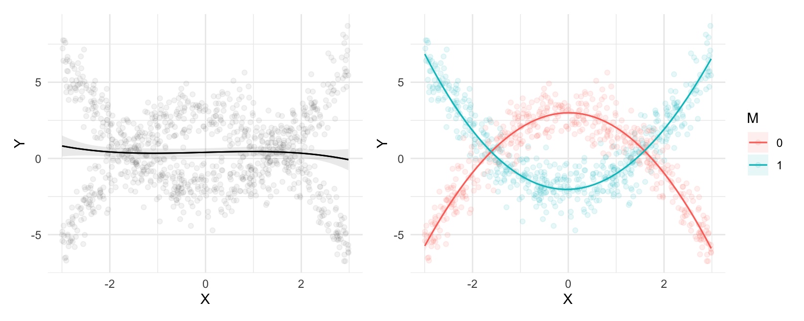
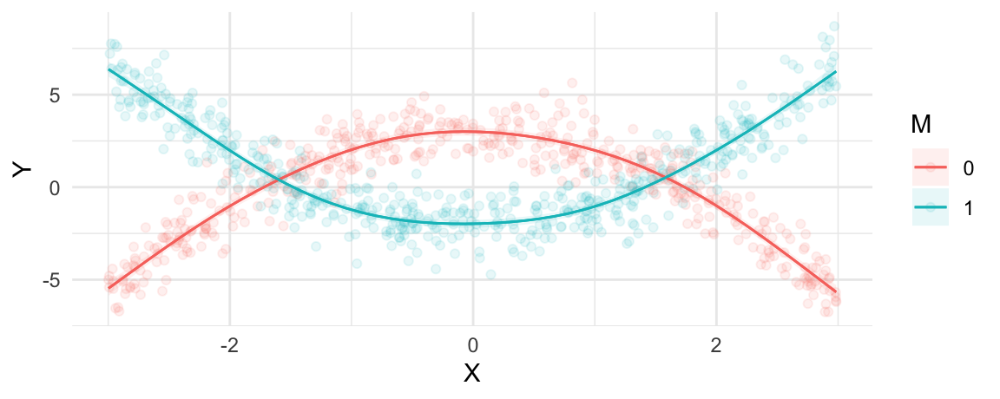

Interactions, polynomials, and splines
So far, the models that we have considered were relatively simple. In this chapter, we apply the same workflow, framework, and software introduced in Parts I and II of the book to interpret estimates from sligthly more complex specifications. Our goal is to address two related issues: heterogeneity and flexibility.
Heterogeneity is present in virtually all empirical domains, when the effect of an intervention is stronger in some groups or contexts. For instance, a new treatment might significantly reduce blood pressure in younger adults, but have a weaker effect on older ones. Or a marketing campaign may increase sales in rural areas but not urban ones. This chapter shows how to use marginaleffects to report strata-specific effects, gauge if the impact of a variable is moderated by another, and gain a deeper understanding of context conditionality.
Flexible statistical models can be useful when studying the complex (potentially non-linear) relationships which are common in many fields.1 In environmental science, for example, the relationship between temperature and crop yield is often non-linear: as temperatures rise, crop yields may initially increase due to optimal growing conditions but eventually decline as heat stress becomes detrimental. This chapter shows how the same toolkit used to study heterogeneity can be leveraged to develop insight about complex empirical patterns.
We will focus on three strategies to account for heterogeneity and increase the flexibility of our models: multiplicative interactions, polynomials, and splines.
Multiplicative interactions
We say that there is heterogeneity when the strength of the association between an explanator \(X\) and an outcome \(Y\) varies based on the value of a moderator \(M\). Typically, \(M\) is a variable which measures contextual elements, or characteristics of the individuals, groups, or units under observation. The key characteristic of a moderator is that it modifies the nature of the relationship between two other variables. \(M\) can strengthen, weaken, or even reverse the association between an independent variable \(X\) and the dependent variable \(Y\).
One common strategy to study moderation is to fit a statistical model with multiplicative interactions [@BraClaGol2006; @KamFra2009; @ClaGol2023]. This involves creating a new composite variable by multiplying the explanator (\(X\)) to the moderator (\(M\)). When this composite variable is included in the model specification, its associated coefficient will capture \(M\)’s role in effect modification. A popular specification for moderation analysis is this linear model:2
\[Y = \beta_1 + \beta_2 \cdot M + \beta_3 \cdot X + \beta_4 \cdot X \cdot M + \varepsilon,\]
where \(Y\) is the outcome, \(X\) is the cause of interest, and \(M\) is a contextual variable which moderates the relationship between \(X\) and \(Y\). In that model, \(\beta_2\) characterizes the association between \(X\) and \(Y\) when \(M=0\). If the moderator \(M\) is non-zero, the strength of association between \(X\) and \(Y\) is represented by more than the simple \(\beta_2\) coefficient. We see this by inspecting the partial derivative:
\[\frac{\partial Y}{\partial X} = \beta_3 + \beta_4 \cdot M\]
This equation represents the slope of \(Y\) with respect to \(X\), that is, the extent to which \(Y\) is expected to change in response to a small change in \(X\). Clearly, this relationship now depends on more than just \(X\) itself: the strength of association between \(X\) on \(Y\) is driven in part by the value of \(M\). Thusly, this model specification allows the effect of an explanator to vary based on the value of a mediator.
In the next few sections, we will illustrate how to model heterogeneity using multiplicative interactions and how to interpret our parameter estimates using the software tools and conceptual framework in Parts I and II.
Categorical-by-categorical
The first case to consider is when the association between a categorical explanator X and an outcome Y is moderated by a categorical variable M. This situation could occur when the effect of a binary treatment (treatment vs. control) on patient recovery (outcome) varies across different age groups (young, middle-aged, elderly).
To illustrate, we consider simulated data (Section 4) with three variables: the outcome Y is a binary variable; the treatment X is a binary variable; and the moderator M is a categorical variable with 3 levels (a, b, and c).
We load the data and fit a logistic regression model:3
As is the case for many of the more complex models that we will consider, the coefficient estimates for this logit model with interactions are difficult to interpret on their own:
summary(mod)
#>
#> Call:
#> glm(formula = Y ~ X * M, family = binomial, data = dat)
#>
#> Coefficients:
#> Estimate Std. Error z value Pr(>|z|)
#> (Intercept) 0.43643 0.07195 6.065 1.32e-09 ***
#> X 0.26039 0.10337 2.519 0.0118 *
#> Mb 0.56596 0.10699 5.290 1.23e-07 ***
#> Mc 0.96967 0.11087 8.746 < 2e-16 ***
#> X:Mb 0.89492 0.17300 5.173 2.30e-07 ***
#> X:Mc 1.41219 0.21462 6.580 4.71e-11 ***
#> ---
#> Signif. codes: 0 '***' 0.001 '**' 0.01 '*' 0.05 '.' 0.1 ' ' 1
#>
#> (Dispersion parameter for binomial family taken to be 1)
#>
#> Null deviance: 5284.2 on 4999 degrees of freedom
#> Residual deviance: 4808.5 on 4994 degrees of freedom
#> AIC: 4820.5
#>
#> Number of Fisher Scoring iterations: 5Thankfully, we can rely on the framework and tools introduced in Parts I and II of this book to make these results intelligible.
Marginal predictions
Our first cut is to compute the average predicted outcome for each combination of X and M. As explained in ?@sec-predictions, this is equivalent to computing fitted values for every row in the original data, and then aggregating those fitted values by subgroups.4
avg_predictions(mod, by = c("X", "M"))
#>
#> X M Estimate Std. Error z Pr(>|z|) S 2.5 % 97.5 %
#> 0 a 0.607 0.01716 35.4 <0.001 909.5 0.574 0.641
#> 1 b 0.896 0.01058 84.7 <0.001 Inf 0.876 0.917
#> 0 c 0.803 0.01334 60.2 <0.001 Inf 0.777 0.829
#> 1 a 0.667 0.01647 40.5 <0.001 Inf 0.635 0.700
#> 0 b 0.732 0.01555 47.0 <0.001 Inf 0.701 0.762
#> 1 c 0.956 0.00707 135.2 <0.001 Inf 0.942 0.970
#>
#> Type: response
#> Columns: rowid, X, M, estimate, std.error, statistic, p.value, s.value, conf.low, conf.high, rowid_dedupThere is considerable variation in the predicted value of Y across subgroups, going from 61% to 96%. This variation can be made starker by plotting our results with the plot_predictions() function:
plot_predictions(mod, by = c("M", "X"))Figure 1 shows that, on average, the predicted probability that Y=1 is considerably higher when X=1. Moreover, the difference in predicted outcomes \(P(Y=1|X=1,M=a)-P(Y=1|X=0,M=a)\) seems smaller than \(P(Y=1|X=1,M=c)-P(Y=1|X=0,M=c)\). This is a hint that we may want to formally check for effect moderation.
Does X affect Y?
We can build on these preliminary findings by adopting a more explicitly counterfactual approach, using the comparisons() family of function. Recall, from ?@sec-comparisons, that we can compute an average counterfactual comparison by following these steps:
- Modify the original dataset by fixing
Xto 0 for all observations, and compute predictions for every row. - Modify the original dataset by fixing
Xto 1 for all observations, and compute predictions for every row. - Calculate the average difference between counterfactual predictions computed in steps 1 and 2.
These three steps can be taken with a single line of code:
avg_comparisons(mod, variables = "X")
#>
#> Estimate Std. Error z Pr(>|z|) S 2.5 % 97.5 %
#> 0.127 0.0112 11.3 <0.001 96.0 0.105 0.149
#>
#> Term: X
#> Type: response
#> Comparison: mean(1) - mean(0)
#> Columns: term, contrast, estimate, std.error, statistic, p.value, s.value, conf.low, conf.high, predicted_lo, predicted_hi, predictedOn average, moving from 0 to 1 on the X variable is associated with an increase of 0.127 on the outcome scale. Since we fit a logistic regression model, predictions are expressed on the probability scale. Thus, the estimate printed above suggests that the average treatment effect of X on Y is about 12.7 percentage points. This estimate is statistically distinguishable from zero, as the small \(p\) value attests.
Is the effect of X on Y moderated by M?
Now we can dive deeper, exploiting the multiplicative interaction in our model to interrogate heterogeneity. To see if the effect of X on Y depends on M, we make the same function call as above, but add the by argument:
avg_comparisons(mod, variables = "X", by = "M")
#>
#> M Estimate Std. Error z Pr(>|z|) S 2.5 % 97.5 %
#> a 0.0601 0.0238 2.53 0.0115 6.4 0.0135 0.107
#> b 0.1649 0.0188 8.77 <0.001 58.9 0.1280 0.202
#> c 0.1529 0.0151 10.13 <0.001 77.7 0.1233 0.182
#>
#> Term: X
#> Type: response
#> Comparison: mean(1) - mean(0)
#> Columns: term, contrast, M, estimate, std.error, statistic, p.value, s.value, conf.low, conf.high, predicted_lo, predicted_hi, predictedOn average, moving from the control (X=0) to the treatment group (X=1) is associated with an increase of 6 percentage points for individuals in category A. The average estimated effect of X for individuals in category C is 15.
At first glance, these two estimated effects look different. But is the difference between 6 and 15 percentage points statistically significant? To answer this question, we can use the hypothesis argument and conduct a test of equality between the 1st and the 3rd estimate:
avg_comparisons(mod, variables = "X", by = "M", hypothesis = "b3 - b1 = 0")
#>
#> Estimate Std. Error z Pr(>|z|) S 2.5 % 97.5 %
#> 0.0928 0.0282 3.29 <0.001 10.0 0.0376 0.148
#>
#> Term: b3-b1=0
#> Type: response
#> Columns: term, estimate, std.error, statistic, p.value, s.value, conf.low, conf.highThe difference between the average estimated effect of X in categories C and A is: \(0.1529 - 0.0601 = 0.0928\). This difference is associated to a large \(z\) statistic and a small \(p\) value. Therefore, we can conclude that the difference is statistically significant; we can reject the null hypothesis that the effect of X is the same in sub-populations A and C.
Categorical-by-continuous
The second case to consider is an interaction between a categorical explanator (X) and a continuous mediator (M). To illustrate, we fit a new model to simulated data (see Section 4):
dat <- read.csv("data/interaction_02.csv")
mod <- glm(Y ~ X * M, data = dat, family = binomial)
summary(mod)
#>
#> Call:
#> glm(formula = Y ~ X * M, family = binomial, data = dat)
#>
#> Coefficients:
#> Estimate Std. Error z value Pr(>|z|)
#> (Intercept) -0.83981 0.04644 -18.083 < 2e-16 ***
#> X 0.19222 0.06334 3.035 0.00241 **
#> M -0.75891 0.05049 -15.030 < 2e-16 ***
#> X:M 0.35209 0.06753 5.213 1.85e-07 ***
#> ---
#> Signif. codes: 0 '***' 0.001 '**' 0.01 '*' 0.05 '.' 0.1 ' ' 1
#>
#> (Dispersion parameter for binomial family taken to be 1)
#>
#> Null deviance: 6367.0 on 4999 degrees of freedom
#> Residual deviance: 6011.4 on 4996 degrees of freedom
#> AIC: 6019.4
#>
#> Number of Fisher Scoring iterations: 4Conditional predictions
In the previous section, we started by compute average predictions for each combination of the interacted variable. When one of the variables is continuous and takes on many values (like M), it is not practical to report averages for every combination of X and M. Therefore, we focus on “conditional” estimates, obtained by calling the predictions() function. We use the datagrid() and fivenum() functions to create a grid of predictors based on Tukey’s five number summary of M:5
predictions(mod, newdata = datagrid(X = c(0, 1), M = fivenum))
#>
#> X M Estimate Pr(>|z|) S 2.5 % 97.5 %
#> 0 -3.14813 0.8248 <0.001 75.9 0.7766 0.8645
#> 0 -0.65902 0.4159 <0.001 35.8 0.3921 0.4401
#> 0 0.00407 0.3009 <0.001 241.6 0.2821 0.3204
#> 0 0.68359 0.2045 <0.001 329.8 0.1848 0.2256
#> 0 3.53494 0.0287 <0.001 240.8 0.0198 0.0414
#> 1 -3.14813 0.6532 <0.001 16.6 0.5871 0.7139
#> 1 -0.65902 0.4063 <0.001 45.3 0.3830 0.4300
#> 1 0.00407 0.3432 <0.001 168.1 0.3244 0.3624
#> 1 0.68359 0.2838 <0.001 206.5 0.2623 0.3063
#> 1 3.53494 0.1105 <0.001 114.7 0.0820 0.1473
#>
#> Type: invlink(link)
#> Columns: rowid, estimate, p.value, s.value, conf.low, conf.high, X, M, YThe results show considerable variation in the predicted \(Pr(Y=1)\), ranging from 0.0 to 0.8.
Instead of making predictions for discrete values of the continuous moderator M, we can also draw a plot with that variable on the x-axis:
plot_predictions(mod, condition = c("M", "X"))Figure 2 shows that predicted values of Y tend to be lower when M is large. That figure also suggests that the relationship between X and Y has a different character for different values of \(M\). When \(M\) is small, we see \(Pr(Y=1|X=1)<Pr(Y=1|X=0)\). When \(M\) is large, the converse seems true.
Does X affect Y?
Moving to the counterfactual analysis, we call avg_comparisons() to get an overall estimate of the effect of X on the predicted \(Pr(Y=1)\):
avg_comparisons(mod, variables = "X")
#>
#> Estimate Std. Error z Pr(>|z|) S 2.5 % 97.5 %
#> 0.0284 0.0129 2.21 0.0273 5.2 0.00318 0.0536
#>
#> Term: X
#> Type: response
#> Comparison: mean(1) - mean(0)
#> Columns: term, contrast, estimate, std.error, statistic, p.value, s.value, conf.low, conf.high, predicted_lo, predicted_hi, predictedOn average, moving from 0 to 1 on X increases the predicted probability that Y=1 by 2.8 percentage points.
Is the effect of X on Y moderated by M?
As explained in ?@sec-comparisons, we can estimate the effect of X for different values of M by using the newdata argument and datagrid() function. Here, we measure the strength of association between X and Y for two different values of M: its minimum and maximum.
comparisons(mod, variables = "X", newdata = datagrid(M = range))
#>
#> M Estimate Std. Error z Pr(>|z|) S 2.5 % 97.5 %
#> -3.15 -0.1716 0.0395 -4.35 <0.001 16.2 -0.2489 -0.0943
#> 3.53 0.0818 0.0174 4.70 <0.001 18.5 0.0477 0.1159
#>
#> Term: X
#> Type: response
#> Comparison: 1 - 0
#> Columns: rowid, term, contrast, estimate, std.error, statistic, p.value, s.value, conf.low, conf.high, M, predicted_lo, predicted_hi, predicted, X, YMoving from 0 to 1 on the X variable is associated with a change of -0.172 in the predicted Y when the moderator M is at its minimum. Moving from 0 to 1 on the X variable is associated with a change of 0.082 in the predicted Y when the moderator M is at its maximum. Both of these estimates are associated with small \(p\) values, so we can reject the null hypotheses that they are equal to zero.
Both estimates are different from zero, but are they different from one another? Is the effect of X on Y different when M takes on different values? To check this, we can add the hypothesis argument to the previous call:
comparisons(mod,
hypothesis = "b2 - b1 = 0",
variables = "X",
newdata = datagrid(M = range))
#>
#> Estimate Std. Error z Pr(>|z|) S 2.5 % 97.5 %
#> 0.253 0.0546 4.64 <0.001 18.2 0.146 0.36
#>
#> Term: b2-b1=0
#> Type: response
#> Columns: term, estimate, std.error, statistic, p.value, s.value, conf.low, conf.highThis confirms that the estimates are statistically distinguishable. We can reject the null hypothesis that M has no moderating effect the relationship between X and Y.
Continuous-by-continuous
The third case to consider is an interaction between two continuous numeric variables: X and M. To illustrate, we fit a new model to simulated data (see Section 4):
Conditional predictions
As in the previous cases, we begin by computing the predicted outcomes for different values of the predictors. In practice, the analyst should report predictions for predictor values that are meaningful to the domain of application. Here, we hold X and M to fixed arbitrary values:
predictions(mod, newdata = datagrid(X = c(-2, 2), M = c(-1, 0, 1)))
#>
#> X M Estimate Pr(>|z|) S 2.5 % 97.5 %
#> -2 -1 0.2586 <0.001 78.0 0.2215 0.2995
#> -2 0 0.1365 <0.001 380.2 0.1189 0.1563
#> -2 1 0.0669 <0.001 326.1 0.0531 0.0839
#> 2 -1 0.2177 <0.001 104.1 0.1837 0.2561
#> 2 0 0.4855 0.425 1.2 0.4500 0.5212
#> 2 1 0.7619 <0.001 87.2 0.7213 0.7982
#>
#> Type: invlink(link)
#> Columns: rowid, estimate, p.value, s.value, conf.low, conf.high, X, M, YRather than focus on arbitrary point estimates, we can plot predicted values to communicate a richer set of estimates. When calling plot_predictions() with these data, we obtain a plot of predicted outcomes with the primary variable of interest (X) on the x-axis, and different lines representing different values of the moderator (M).
plot_predictions(mod, condition = c("X", "M"))
We can draw two preliminary conclusions from Figure 3. First, the predicted values of Y depend strongly on the value of X. Moving from left to right in the plot often has a strong effect on the heights of predicted probability curves. Second, M strongly moderates the relationship between X and Y. Indeed, for some values of M the relationship of interest completely flips. For example, when M is around -3, the relationship between X and Y is negative: an increase in X is associated with a decrease in Pr(Y=1). However, for all the other values of M that we considered, the relationship between X and Y is positive: an increase in X is associated withn an increase in Pr(Y=1).
Does X affect Y?
To measure the “effect” of X on the predicted outcome, we can compute the average slope with respect to our predictor of interest:
avg_slopes(mod, variables = "X")
#>
#> Estimate Std. Error z Pr(>|z|) S 2.5 % 97.5 %
#> 0.0857 0.00571 15 <0.001 166.7 0.0745 0.0969
#>
#> Term: X
#> Type: response
#> Comparison: mean(dY/dX)
#> Columns: term, contrast, estimate, std.error, statistic, p.value, s.value, conf.low, conf.high, predicted_lo, predicted_hi, predictedOn average, across all observed values of the moderator M, increasing X by one unit increases the predicted outcome by 0.086.6 This is interesting, but as suggested by Figure 3, there is strong heterogeneity in the relationship of interest, as a function of moderator M. Indeed, this is what we observe by computing slopes for different values of M:
Is the effect of X on Y moderated by M?
To answer this question, we estimate slopes of Y with respect to X, for different values of the moderator M:
slopes(mod, variables = "X", newdata = datagrid(M = fivenum))
#>
#> M Estimate Std. Error z Pr(>|z|) S 2.5 % 97.5 %
#> -3.0788 -0.1525 0.01899 -8.03 < 0.001 49.9 -0.18969 -0.1153
#> -0.6759 0.0200 0.00756 2.65 0.00816 6.9 0.00519 0.0348
#> 0.0137 0.0913 0.00695 13.14 < 0.001 128.7 0.07768 0.1049
#> 0.6906 0.1698 0.00950 17.86 < 0.001 234.7 0.15113 0.1884
#> 3.4711 0.5426 0.03363 16.14 < 0.001 192.2 0.47673 0.6085
#>
#> Term: X
#> Type: response
#> Columns: rowid, term, estimate, std.error, statistic, p.value, s.value, conf.low, conf.high, M, predicted_lo, predicted_hi, predicted, X, YThe results from this command confirm the intuition we developed based on Figure 3. When M is strongly negative (-3), the slope is negative: increasing X results in a reduction of Y. However, for the other 4 values of M we consider, the slope is positive. This is consistent with Figure 3, which shows one line with downward slope, and four lines with upward slopes.
For a more fine grained analysis, we can plot the slope of Y with respect to X for all observed values of the moderator M:
plot_slopes(mod, variables = "X", condition = "M") +
geom_hline(yintercept = 0, linetype = "dotted")
Y with respect to X, for different values of the moderator M.
Figure 4 plot shows that when the moderator M is below -1, the relationship between X and Y is negative: increasing X decreases Y. However, when M rises to about -1, the relationship between X and Y becomes positive: increasing X increases Y.
We can confirm that this moderation effect is statistically significant using the hypothesis argument:
slopes(mod,
hypothesis = "b2 - b1 = 0",
variables = "X",
newdata = datagrid(M = range))
#>
#> Estimate Std. Error z Pr(>|z|) S 2.5 % 97.5 %
#> 0.695 0.0475 14.6 <0.001 158.8 0.602 0.788
#>
#> Term: b2-b1=0
#> Type: response
#> Columns: term, estimate, std.error, statistic, p.value, s.value, conf.low, conf.highThe \(\frac{\partial Y}{\partial X}\) slope is larger when evaluated at maximum M, than at minimum M. Therefore, we can reject the null hypothesis that M has no moderating effect on the relationship between X and Y.
Multiple interactions
The fourth case to consider is when more than two variables are included in multiplicative interactions. Such models have serious downsides: they can overfit the data, and they impose major costs in terms of statistical power, typically requiring considerably larger sample sizes than models without interaction. On the upside, models with multiple interactions allow more flexibility in modelling, and they can capture complex patterns of moderation between regressors.
Models with several multiplicative interactions do not pose any particular interpretation challenge, since the tools and workflows introduced in this book can be applied to these models in straightforward fashion. Consider this model, fit to simulated data, with three binary variables multipled to each other:
dat <- read.csv("data/interaction_04.csv")
mod <- glm(Y ~ X * M1 * M2, data = dat, family = binomial)
summary(mod)
#>
#> Call:
#> glm(formula = Y ~ X * M1 * M2, family = binomial, data = dat)
#>
#> Coefficients:
#> Estimate Std. Error z value Pr(>|z|)
#> (Intercept) -1.0209 0.0908 -11.244 < 2e-16 ***
#> X 0.4632 0.1229 3.768 0.000165 ***
#> M1 -0.7954 0.1470 -5.411 6.26e-08 ***
#> M2 0.5788 0.1217 4.755 1.98e-06 ***
#> X:M1 0.6746 0.1890 3.569 0.000358 ***
#> X:M2 -0.9649 0.1716 -5.623 1.87e-08 ***
#> M1:M2 0.4046 0.1890 2.141 0.032297 *
#> X:M1:M2 0.1976 0.2542 0.777 0.436869
#> ---
#> Signif. codes: 0 '***' 0.001 '**' 0.01 '*' 0.05 '.' 0.1 ' ' 1
#>
#> (Dispersion parameter for binomial family taken to be 1)
#>
#> Null deviance: 6176.5 on 4999 degrees of freedom
#> Residual deviance: 6025.2 on 4992 degrees of freedom
#> AIC: 6041.2
#>
#> Number of Fisher Scoring iterations: 4Once again, the coefficient estimates of this logistic regression are difficult to interpret on their own, so we use functions from the marginaleffects package.
Marginal predictions
As before, we can compute and display marginal predicted outcomes in any subgroup of interest, using the avg_predictions() or plot_predictions():
plot_predictions(mod, by = c("X", "M1", "M2"))X, M1, and M2.
Does X affect Y?
As before, we can estimate the average change in Y associated with a change from 0 to 1 in the X variable using the avg_comparisons() function:
avg_comparisons(mod, variables = "X")
#>
#> Estimate Std. Error z Pr(>|z|) S 2.5 % 97.5 %
#> 0.0657 0.0129 5.1 <0.001 21.5 0.0405 0.091
#>
#> Term: X
#> Type: response
#> Comparison: mean(1) - mean(0)
#> Columns: term, contrast, estimate, std.error, statistic, p.value, s.value, conf.low, conf.high, predicted_lo, predicted_hi, predictedThis suggests that, on average, moving from the control (0) to the treatment (1) group is associated with an increase of 6.6 percentage points in the probability that Y equals 1. The \(p\) value is small, which implies that we can reject the null hypothesis that X has no effect on the predicted outcome.
Is the effect of X on Y moderated by M1?
We can also estimate how the effect of X varies based on different values of moderator M1:
avg_comparisons(mod, variables = "X", by = "M1")
#>
#> M1 Estimate Std. Error z Pr(>|z|) S 2.5 % 97.5 %
#> 0 -0.00703 0.0185 -0.38 0.704 0.5 -0.0433 0.0292
#> 1 0.14026 0.0179 7.83 <0.001 47.6 0.1052 0.1754
#>
#> Term: X
#> Type: response
#> Comparison: mean(1) - mean(0)
#> Columns: term, contrast, M1, estimate, std.error, statistic, p.value, s.value, conf.low, conf.high, predicted_lo, predicted_hi, predictedThe results suggest that the change in Y associated with a change in X differs based on the value of M1: -0.0070 vs. 0.1403. By using the hypothesis argument, we can confirm that the difference between these two estimated effect sizes is statistically significant:
avg_comparisons(mod,
variables = "X",
by = "M1",
hypothesis = "b2 - b1 = 0")
#>
#> Estimate Std. Error z Pr(>|z|) S 2.5 % 97.5 %
#> 0.147 0.0258 5.72 <0.001 26.5 0.0968 0.198
#>
#> Term: b2-b1=0
#> Type: response
#> Columns: term, estimate, std.error, statistic, p.value, s.value, conf.low, conf.highDoes the moderating effect of M1 depend on M2?
The last question that we pose is more complex. Above, we established that:
- On average,
Xaffects the predicted value ofY. - On average, the value of
M1modifies the strength of association betweenXandY.
Now we ask if M2 changes the way in which M1 moderates the effect of X on Y. The difference is subtle but important: we are asking if the moderation effect of M1 is itself moderated by M2.
The following code computes the average difference in predicted Y associated with a change in X, for every combination of moderators M1 and M2. Each row represents the average effect of X at different points in the sample space:
avg_comparisons(mod,
variables = "X",
by = c("M2", "M1"))
#>
#> M2 M1 Estimate Std. Error z Pr(>|z|) S 2.5 % 97.5 %
#> 0 0 0.0992 0.0261 3.80 < 0.001 12.8 0.0481 0.1504
#> 0 1 0.1967 0.0236 8.35 < 0.001 53.7 0.1505 0.2429
#> 1 0 -0.1111 0.0262 -4.24 < 0.001 15.4 -0.1625 -0.0597
#> 1 1 0.0834 0.0270 3.09 0.00203 8.9 0.0304 0.1363
#>
#> Term: X
#> Type: response
#> Comparison: mean(1) - mean(0)
#> Columns: term, contrast, M2, M1, estimate, std.error, statistic, p.value, s.value, conf.low, conf.high, predicted_lo, predicted_hi, predictedWhen we hold the moderators fixed at M1=0 and M2=0, changing the value of X from 0 to 1 changes the predicted value of Y by 9.9 percentage points. When we hold the moderators fixed at M1=0 and M2=1, changing the value of X from 0 to 1 changes the predicted value of Y by -11.1 percentage points.
Now, imagine that we hold M2 constant at 0. We can determine if the effect of X is moderated by M1 by using the hypothesis argument to compare estimates in rows 1 and 2. This shows that the estimated effect size of X is larger when M1=1 than when M1=0, holding M2 at 0.
avg_comparisons(mod,
hypothesis = "b2 - b1 = 0",
variables = "X",
by = c("M2", "M1"))
#>
#> Estimate Std. Error z Pr(>|z|) S 2.5 % 97.5 %
#> 0.0975 0.0351 2.77 0.00555 7.5 0.0286 0.166
#>
#> Term: b2-b1=0
#> Type: response
#> Columns: term, estimate, std.error, statistic, p.value, s.value, conf.low, conf.highSimilarly, imagine that we hold M2 constant at 1. We can determine if the effect of X is moderated by M1 by comparing estimates in rows 3 and 4. This hypothesis test shows that the effect size of X is larger when M1=1 than when M1=0, holding M2 at 1.
avg_comparisons(mod,
hypothesis = "b4 - b3 = 0",
variables = "X",
by = c("M2", "M1"))
#>
#> Estimate Std. Error z Pr(>|z|) S 2.5 % 97.5 %
#> 0.194 0.0377 5.16 <0.001 22.0 0.121 0.268
#>
#> Term: b4-b3=0
#> Type: response
#> Columns: term, estimate, std.error, statistic, p.value, s.value, conf.low, conf.highThe last two estimates can be interpreted as measuring the extent to which M1 acts as a moderator, holding M2 at different values. To answer the question of whether M2 moderates the moderation effect of M1, we can specify the hypothesis as a difference in differences:
avg_comparisons(mod,
hypothesis = "(b2 - b1) - (b4 - b3) = 0",
variables = "X",
by = c("M2", "M1"))
#>
#> Estimate Std. Error z Pr(>|z|) S 2.5 % 97.5 %
#> -0.097 0.0515 -1.88 0.0597 4.1 -0.198 0.00396
#>
#> Term: (b2-b1)-(b4-b3)=0
#> Type: response
#> Columns: term, estimate, std.error, statistic, p.value, s.value, conf.low, conf.highThis suggests that M2 may have a second order moderation effect, but we cannot completely completely rule out the null hypothesis because the \(p\) value does not cross conventional thresholds of statistical significance (\(p\)=0.0597).
Hypothesis tests: effect vs. moderation
TODO: Two research questions are often conflated:
- Effect: Does \(X\) affect \(Y\)?
- Is the \(\frac{\partial Y}{\partial X}\) slope different from 0 when \(M=m\)?
- Moderation: Does \(M\) moderate the relationship between \(X\) and \(Y\)?
- Is the \(\frac{\partial Y}{\partial X}\) different when \(M=m\) and \(M=n\)?
Polynomial regression
Polynomial regression is an extension of linear regression that allows for modeling the relationship between a dependent variable \(Y\) and an independent variable \(X\) as an nth-degree polynomial. While the model specification remains linear in the coefficients, it is polynomial in the value of \(X\). This type of regression is useful when the data shows a non-linear relationship that a straight line cannot adequately capture.
The general form of a polynomial regression model is:
\[Y = \beta_0 + \beta_1 X + \beta_2 X^2 + \beta_3 X^3 + \cdots + \beta_n X^n + \varepsilon,\]
where \(Y\) is the dependent variable, \(X\) is the independent variable, \(\beta_0, \beta_1, \beta_2, \ldots, \beta_n\) are the coefficients to be estimated, \(n\) is the degree of the polynomial, and \(\varepsilon\) represents the error term. For instance, a second-degree (quadratic) polynomial regression equation can be written as:
\[Y = \beta_0 + \beta_1 X + \beta_2 X^2 + \varepsilon\]
This can be treated as a linear regression problem by constructing new variables \(Z_1=X\), \(Z_2=X^2\), etc. The model then becomes \(Y=\beta_0+\beta_1\cdot Z_1+\beta_2\cdot Z_2+\varepsilon\), which can be estimated using standard methods like ordinary least squares.
Polynomial regression offers several key advantages, particularly in its flexibility and ability to fit a wide range of curves, simply by adjusting the degree of the polynomial. As a result, polynomial regression can reveal underlying patterns in the data that are not immediately apparent with simpler models.
This approach also has notable disadvantages. One significant issue is its potential for overfitting, especially when the \(n\) order is high. Moreover, polynomial regression can suffer from unreliable extrapolation, where predictions made outside the range of the training data can become erratic and unrealistic. Consequently, while polynomial regression can be powerful, careful consideration must be given to the degree of the polynomial to balance fit and generalization effectively.
Polynomial regression can be viewed simply as a model specification with several variables interacted with themselves. As such, it can be interpreted using exactly the same tools discussed in the earlier part of this chapter. To illustrate, we consider two simple data generating processes adapted from @HaiMumXu2019. The first is:
\[\begin{align*} Y = 2.5 - X^2 + \nu, && \text{where }\nu\sim N(0,1),X\sim U(-3,3) \end{align*}\]
If we fit a linear model with only \(X\) as predictor, the line of best fit will not be a good representation of the data. However, a cubic polynomial regression can easily detect the curvilinear relationship between \(X\) and \(Y\). In R and Python, we can use similar syntax to specify polynomials directly in the model formula:7
library(patchwork)
dat <- read.csv("data/polynomial_01.csv")
mod_linear <- lm(Y ~ X, data = dat)
mod_cubic <- lm(Y ~ X + I(X^2) + I(X^3), data = dat)
p1 <- plot_predictions(mod_linear, condition = "X", points = .05) + ggtitle("Linear")
p2 <- plot_predictions(mod_cubic, condition = "X", points = .05) + ggtitle("Cubic")
p1 + p2Clearly, the model with polynomials makes much better predictions, ones that capture the curvilinear relationship between \(X\) and \(Y\). We can now evaluate the strength of association between \(X\) and \(Y\) by computing the slope of the outcome equation with respect to \(X\), for different values of \(X\):
slopes(mod_cubic, variables = "X", newdata = datagrid(X = c(-2, 0, 2)))
#>
#> Term X Estimate Std. Error z Pr(>|z|) S 2.5 % 97.5 %
#> X -2 3.98616 0.0351 113.596 <0.001 Inf 3.9174 4.0549
#> X 0 0.00478 0.0226 0.211 0.833 0.3 -0.0396 0.0491
#> X 2 -3.97639 0.0359 -110.705 <0.001 Inf -4.0468 -3.9060
#>
#> Type: response
#> Columns: rowid, term, estimate, std.error, statistic, p.value, s.value, conf.low, conf.high, X, predicted_lo, predicted_hi, predicted, YWhen \(X\) is negative (-2), the slope is positive which indicates that an increase of \(X\) is associated with an increase in \(Y\). When \(X\) is around 0, the slope is null, which indicates that the strength of association between \(X\) and \(Y\) is null (or very weak). When \(X\) is around 0, changing \(X\) by a small amount will have almost no effect on \(Y\). When \(X\) is positive (-2), the slope is negative. This indicates that increasing \(X\) will result in a decrease in \(Y\).
Now, consider a sligthly different data generating process, where a binary moderator \(D\) changes the nature of the relationship between \(X\) and \(Y\):8
\[\begin{align*} Y = 2.5 - X^2 - 5 \cdot M + 2 \cdot M \cdot X^2 + \nu && \text{where }\nu\sim N(0,1),X\sim U(-3,3) \end{align*}\]
If we simply fit a cubic regression, without accounting for \(M\), our predictions will be inaccurate. However, if we interact the moderator \(M\) with all polynomial terms (using parentheses as a shortcut for the distributive property), we can get an excellent fit for the curvilinear and differentiated relationship between \(X\) and \(Y\):
dat <- read.csv("data/polynomial_02.csv")
# cubic
mod_cubic <- lm(Y ~ X + I(X^2) + I(X^3), data = dat)
# cubic + interaction
mod_cubic_int <- lm(Y ~ M * (X + I(X^2) + I(X^3)), data = dat)
p1 <- plot_predictions(mod_cubic, condition = "X", points = .05)
p2 <- plot_predictions(mod_cubic_int, condition = c("X", "M"), points = .1)
p1 + p2
Of course, we can also estimate the slope of the outcome equation for different values of M and X:
slopes(mod_cubic_int,
variables = "X",
newdata = datagrid(M = c(0, 1), X = fivenum))
#>
#> Term M X Estimate Std. Error z Pr(>|z|) S 2.5 % 97.5 %
#> X 0 -2.9974 5.7529 0.2588 22.228 <0.001 361.2 5.24566 6.2602
#> X 0 -1.4845 2.9009 0.0582 49.874 <0.001 Inf 2.78693 3.0149
#> X 0 -0.0586 0.1324 0.0667 1.986 0.047 4.4 0.00174 0.2631
#> X 0 1.4788 -2.9405 0.0575 -51.103 <0.001 Inf -3.05323 -2.8277
#> X 0 2.9843 -6.0373 0.2540 -23.769 <0.001 412.4 -6.53517 -5.5395
#> X 1 -2.9974 -6.1017 0.2528 -24.137 <0.001 425.2 -6.59716 -5.6062
#> X 1 -1.4845 -2.9061 0.0563 -51.628 <0.001 Inf -3.01646 -2.7958
#> X 1 -0.0586 -0.0461 0.0634 -0.727 0.467 1.1 -0.17026 0.0781
#> X 1 1.4788 2.8730 0.0595 48.279 <0.001 Inf 2.75637 2.9896
#> X 1 2.9843 5.5654 0.2592 21.469 <0.001 337.2 5.05733 6.0735
#>
#> Type: response
#> Columns: rowid, term, estimate, std.error, statistic, p.value, s.value, conf.low, conf.high, M, X, predicted_lo, predicted_hi, predicted, YSplines
TODO:
- What is a spline?
- What is a GAM?
library(mgcv)
# mgcv::gam should treat M as categorical (factor)
mod <- gam(Y ~ s(X, by = factor(M)) + M, data = dat)
plot_predictions(mod, condition = c("X", "M"), points = .1)
slopes(mod, variables = "X", newdata = datagrid(M = c(0, 1), X = c(-1, 0, 1)))
#>
#> Term M X Estimate Std. Error z Pr(>|z|) S 2.5 % 97.5 %
#> X 0 -1 2.134 0.212 10.087 <0.001 77.1 1.719 2.548
#> X 0 0 -0.141 0.212 -0.662 0.508 1.0 -0.557 0.276
#> X 0 1 -1.883 0.201 -9.386 <0.001 67.1 -2.276 -1.489
#> X 1 -1 -1.879 0.201 -9.341 <0.001 66.5 -2.274 -1.485
#> X 1 0 0.113 0.215 0.526 0.599 0.7 -0.308 0.535
#> X 1 1 2.025 0.211 9.595 <0.001 70.0 1.612 2.439
#>
#> Type: response
#> Columns: rowid, term, estimate, std.error, statistic, p.value, s.value, conf.low, conf.high, M, X, predicted_lo, predicted_hi, predicted, YData simulation
This code generates the simulated datasets used in this chapter:
# Multiplicative interactions: X x M
set.seed(1024)
N <- 5000
X <- rbinom(N, 1, .5)
M <- sample(c("a", "b", "c"), N, replace = TRUE)
b <- runif(8, -1, 1)
Y <- rbinom(N, 1, prob = plogis(
b[1] + b[2] * X +
b[3] * (M == "b") + b[4] * (M == "b") + b[5] * (M == "c") +
b[6] * X * (M == "a") + b[7] * X + (M == "b") +
b[8] * X * (M == "c")
))
dat <- data.frame(Y, X, M)
write.csv(dat, "data/interaction_01.csv")
# Multiplicative interactions: X x M
set.seed(1024)
N <- 5000
X <- rbinom(N, 1, .5)
M <- rnorm(N)
b <- runif(4, -1, 1)
Y <- rbinom(N, 1, prob = plogis(
b[1] + b[2] * X + b[3] * M + b[4] * X * M
))
dat <- data.frame(Y, X, M)
write.csv(dat, "data/interaction_02.csv")
# Multiplicative interactions: X x M
set.seed(1024)
N <- 5000
X <- rnorm(N)
M <- rnorm(N)
b <- runif(4, -1, 1)
Y <- rbinom(N, 1, prob = plogis(
b[1] + b[2] * X + b[3] * M + b[4] * X * M
))
dat <- data.frame(Y, X, M)
write.csv(dat, "data/interaction_03.csv")
# Multiplicative interactions: X x M1 x M2
set.seed(1024)
N <- 5000
X <- rbinom(N, 1, .5)
M1 <- rbinom(N, 1, .5)
M2 <- rbinom(N, 1, .5)
b <- runif(8, -1, 1)
Y <- rbinom(N, 1, prob = plogis(
b[1] +
b[2] * X + b[3] * M1 + b[4] * M2 +
b[5] * X * M1 + b[6] * X * M2 + b[7] * M1 * M2 +
b[8] * X * M1 * M2
))
dat <- data.frame(Y, X, M1, M2)
write.csv(dat, "data/interaction_04.csv")
# Polynomial regression: X and Y
set.seed(1024)
N <- 1e3
FUN <- function(X) 2.5 - X^2
X <- runif(N, min = -3, max = 3)
Y <- FUN(X) + rnorm(N, sd = .5)
dat <- data.frame(X, Y)
write.csv(dat, "data/polynomial_01.csv")
# Polynomial regression: X, D, and Y
set.seed(1024)
N <- 1e3
X <- runif(N, min = -3, max = 3)
M <- rbinom(N, size = 1, prob = .5)
Y <- 2.5 - X^2 - 5 * M + 2 * M * X^2 + rnorm(N, .5)
dat <- data.frame(X, M, Y)
write.csv(dat, "data/polynomial_02.csv")Footnotes
One downside of estimating more flexible models is that they may overfit the data. See TODO.↩︎
In most cases, it is important to include all constitutive terms in addition to interactions. For example, if a model includes a multiplication between three variables \(X\cdot W \cdot Z\), one would typically want to also include \(X\cdot W, X\cdot Z, W\cdot Z, X, W,\) and \(Z\). See @ClaGol2023 for details.↩︎
Note that when we insert an expression like
X*Min the formula syntax, we instructRto create binary variables for every level of theMpredictor, and also to interact each of those levels with theXvariable. Under the hood,Rwill multiply treatment and moderator to create the appropriate composite variables (X\(\times\)MbandX\(\times\)Mc), and it will automatically omit one reference category to avoid perfect collinearity.↩︎An alternative would be to compute predictions on a different grid (ex: “balanced”) before aggregating. This could be achieved by calling:
avg_predictions(mod, newdata="balanced", by=c("X","M"))↩︎These five numbers correspond to elements of a standard boxplot: minimum, lower-hinge, median, upper-hinge, and maximum.↩︎
Recall, from ?@sec-slopes, that this interpretation is valid for small changes in the neighborhoods where slopes are evaluated.↩︎
For
marginaleffectsto work properly in this context, it is important to specify the polynomials in the model-fitting formula. Users should not hard-code the values by creating new variables in the dataset before fitting the model.↩︎This data generating process is adapted from @HaiMumXu2019.↩︎